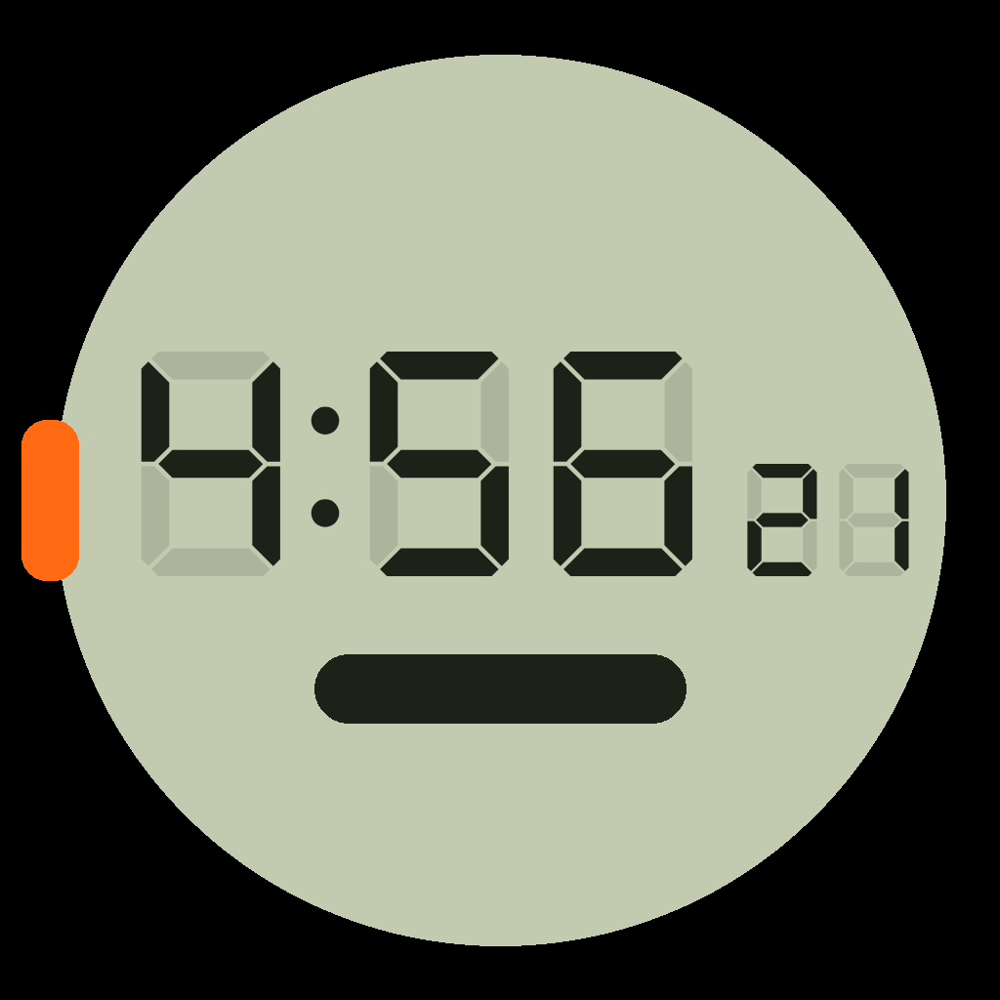
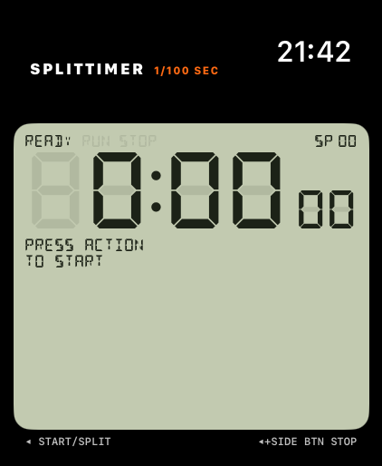

SplitTimer press kit
Group stopwatch for Apple Watch. Last updated November 2026.
Fact sheet
- App name
- SplitTimer LCD (on the watch: SplitTimer)
- Maker
- Bart Hakkenberg, PE teacher in the Netherlands
- Platform
- Apple Watch only (watchOS 11 or later). No iPhone app.
- Price
- €2.99 (local price may differ), one-time. No ads, no in-app purchases.
- Availability
- App Store, 2026
- Languages
- 8
- Category
- Sports
- Privacy
- No account, no server, no tracking. Privacy policy
- App Store
- apps.apple.com/app/id6829385609
- Contact
- barthak32@gmail.com
One-line description
A stopwatch for Apple Watch that times a whole group with one start: every tap or Action Button press logs a numbered finish time.
Short description
SplitTimer is a stopwatch for mass starts. Start once, then every tap, or every press of the Action Button on Apple Watch Ultra, records the total time since the start as a numbered split. Ten runners finish? Ten presses. No names to type, no iPhone needed. Made by a PE teacher who needed it.
Long description
SplitTimer is built for coaches, PE teachers and anyone who times more than one person at a time. Start the clock once. Every tap on the display, or every press of the Action Button on Apple Watch Ultra, records the total time since the start as a numbered split, together with the gap to the previous finisher. The latest splits stay on screen while you keep your eyes on the finish line.
Stop with a touch and hold, or with Action Button and side button together, and resume later: the stopped time is left out. When the session ends you see the first time, the last time and the spread. Scroll the full split list with the Digital Crown and export any session as CSV to share or open in a spreadsheet.
The look is a retro LCD display, in three themes. SplitTimer has no account, no server and no tracking. Sessions stay on the watch. While timing, the app runs a workout session so it stays on screen and the Action Button keeps working. A finished session is saved to Health only if you turn that on, and then with nothing but its duration.
Key features
- One start, unlimited numbered splits, in hundredths of a second
- Action Button on Apple Watch Ultra, tap on any supported Apple Watch, double tap on Series 9 and later and Ultra 2 and later
- Gap to the previous finisher for every split
- First, last and spread as soon as you stop
- Stop and resume without losing accuracy
- Session history with CSV export
- Retro LCD look in three themes, available in 8 languages
- No account, no server, no tracking; sessions stay on the watch until you share them
Set up the Action Button
On Apple Watch Ultra: Settings › Action Button › Workout › SplitTimer and choose the Group Timer workout.
App icon


Screenshots
All screenshots use made-up times. Also available per language in Dutch, German, French, Spanish, Portuguese and Japanese (first image of each set; the other four are in the same folder).


PNG, 422 x 514

PNG, 422 x 514

PNG, 422 x 514

PNG, 422 x 514

PNG, 422 x 514

Social preview image, PNG, 1200 x 630

Contact
Review codes, interviews or questions: barthak32@gmail.com.